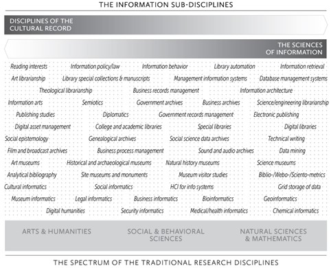

Chapter 1. The Information Field
Learning objectives
This introductory chapter aims to provide an overview of the diverse range of professional pathways to which your ALA-accredited information management program can lead you. As we will see in this chapter, information management degrees are about a lot more than librarianship and can provide you with many opportunities. This chapter will give you an overview of the roles that information professionals can play in various sectors and provide some resources to help you think about your own interests and development pathways.
What is the information field?
The Master of Information, like other similar programs offered in Canada and the United States, is often associated with libraries and librarianship (and rightfully so) because of its accreditation by the American Library Association (ALA). ALA-accredited degrees are generally a requirement for a range of positions in libraries of all kinds and other related organizations. Accordingly, most students reading this chapter will likely be interested in pursuing a career in librarianship. Many of you, however, are in this program with completely different careers in mind, and you may be surprised by the emphasis on libraries. Perhaps some of you have no prior thoughts about the program or the field as you are taking this course as an elective or simply because you ended up here randomly. Those of you in the Master of Information Management program, which is not ALA-accredited, are likely mid-career professionals working in a wide range of sectors. Whatever group you find yourself in, now that you are here, you might be surprised by the breadth of the discipline and the many professional pathways it can lead you on. Maybe you joined the program to be a children services librarian and will come out of it as an aspiring data scientist…who knows?
So, what is the information field? Bates (2015) referred to our discipline as a meta-discipline that spans the entire spectrum of traditional research disciplines, from the Arts and Humanities to Natural Sciences. While it is not comprehensive, this figure from Bates (2015) was an attempt to illustrate the breadth of the discipline by situating many of the sub-disciplines across that spectrum.

Core competencies
Regardless of your professional path or the sector in which you find employment. There are a set of competencies that are core to our field. These are visible through the core competencies lists that you will find on the website of most academic units offering ALA-accredited programs. Here are the MI competencies published on the program’s website:
Adaptation: Information managers anticipate and adapt to trends in information management, support organizational change, and promote a learning culture within the organization.
Collaboration: Information managers work effectively in teams, cultivate a collaborative culture within the organization, and build relationships with stakeholders.
Commitment to equity, diversity, inclusion, accessibility, and decolonization: Information managers practice and critique the principles of equity, diversity, inclusion, accessibility, and decolonization for participating in an inclusive and socially just society.
Communication: Information managers communicate effectively, listen actively, and are receptive to feedback and suggestions.
Digital and technological literacy: Information managers safely, responsibly, creatively, and effectively use technologies. They assess the organization’s or users’ IT requirements and develop and implement IT strategies that support the organization’s mission.
Evidence-based practices: Information managers promote evidence-based decision-making and policies. They use adequate methods to produce, assess, synthesize, and evaluate knowledge to support the organization’s activities.
Leadership: Information managers advocate the strategic importance of information for their organization or community, promote the professional values of the field, support the development of their peers, and mobilize people and resources toward achieving collective goals.
Learning: Information managers are reflexive, life-long learners who adopt a creative and innovative approach to their work.
Management: Information managers effectively manage projects, people and resources and ensure that the information assets and practices of the organization support its values, mission and objectives.
User-centered design: Information Managers engage users and adapt services to their information needs and behaviours.
Roles, values and principles
The information professions fulfill a wide range of societal and organizational roles. All organizations produce and need information to support their operation. They support the day-to-day activities of organizations by collecting and organizing data, documents, and archives and by managing information systems, among other tasks. Information professionals also have an educational role, which they often fulfill by providing data, information literacy, and information technology training to patrons in public libraries, students, and colleagues in any work environment and by gathering and organizing teaching materials to support educators. Information professionals also play an essential role in supporting research in academic, governmental, non-profit, and corporate settings. Information professionals can also play a key role in fulfilling the culture and entertainment mission of organizations such as public libraries and museums.
“Because of differences in goals and in the basic principles that underlie the various disciplines represented in the information profession, it is difficult, if not impossible, to express a single set of values across the information professions.” (Koehler, 2003, p. 109)
Despite the diversity of roles and settings in which information professionals operate, there is a core set of shared values within the field, which tend to be promoted by the programs and professional associations. The following are examples of core values in the information profession, adapted from Gorman (2015). These values may reflect the historical focus of the field (and of Gorman’s book) on libraries. Still, they are also broad principles that can be relevant and applied in various professional settings.
Stewardship
Gathering, organizing, and preserving information for future use.Service
Being of service to our users, colleagues, and communities.Intellectual freedom
Protecting the right of people to hold, share and access ideas without restrictions.Equity, diversity, and inclusion
Ensuring that all individuals and groups have access to information, can participate in the production of information, and be adequately represented in information.Privacy
protecting the privacy of individuals and activities.Literacy and learning
Promoting reading and lifelong learning.Democracy
Supporting democracy and democratic principles.Social responsibility
Working to make the world a better place.
Think about some of the type of work and organization that interests you as a future information professional.
Can you think of ways in which the roles, values and principles listed would apply to that setting?
Are there roles or values that are not relevant in this context?
Are there other values or roles that you can mobilize as an information expert in this context?
Employment sectors
Now, let’s dig deeper into some of the directions that this degree can take you. In the following section, we will provide a deeper overview of different sectors within information management. You can learn more about the different roles and job duties you may encounter and the skills you need to succeed. There is also more information on the professional values of each sector and the professional associations you may be able to join.
The pie chart presented in Figure 3 is based on a survey of the field in the United States (MLIS Skills at Work, 2022). However, it still shows how important the library sector remains regarding career opportunities for information management graduates while highlighting the diversity of sectors in which you may find employment.

In the rest of the chapter, we look more closely at some areas where you might work as an information professional. For each, we provide some information on the typical jobs and the specific skills that may be valuable, as well as other information resources such as the websites of professional associations. We also introduce some information professionals interviewed by Janine McGregor, a second-year MI student, during the summer of 2022.
Public libraries
Some job duties you might encounter while working in a public library include programming, organizing the collection, building community partnerships, answering information requests, providing information literacy training, preparing library budgets and conducting needs analyses.
Some skills that may be necessary should you wish to work in public librarianship include supervisory experience, computer literacy, competency with intranet content management and document management using software, ability to work well with the public, project management and knowledge of the trends in library service design (MLIS skills at work). Of course, these skills are not all required, and you can learn some on the job, but you should look to take courses and internships that help to improve these skills.
Many professional associations to check out if you are interested in public libraries, such as the Public Library Association (a division of the American Library Association) and the Nova Scotia Library Association (free membership for students).
Dyan Bader
Manager
Systems & Collections Access Nova Scotia Provincial Library
As the manager of systems and collections access for the Nova Scotia Provincial Library, Dyan works with all the public libraries outside Halifax, which are grouped into eight regional libraries. Her team manages the back-end systems these libraries use daily, including the integrated library system, their discovery layer, and their digital lending platform. Each regional library region made their own decisions related to the integrated library system. Still, during the last five years, Dyan and her team worked with the eight regional libraries to integrate these into a single system called “Same Page.” The new system launched in April 2022 expands access to almost 1,000,000 resources for patrons throughout Nova Scotia. With the new system, Dyan’s team must work with the different regions to ensure consensus on all decisions that impact the system. These large projects require a lot of planning and coordination to ensure that the best decisions are made since they directly affect libraries across the province. Most of Dyan’s time is spent in meetings and writing documents.
The Nova Scotia Provincial Library is part of the provincial government and supports regional libraries in several ways, either as a leader, a partner, or a service provider. This brings a lot of variety to Dyan’s work since her projects and tasks are driven by these different roles.
Specific skills would benefit those looking to work in a similar role. Project management is huge, as well as problem-solving, facilitation and time management. Leadership is something that you will learn along the way.
One piece of advice that Dyan would give to students is to focus on what they are passionate about. For her, it was an interest in technology and cataloging. Try your best to stick to those things, and hopefully, you will end up in positions that allow you to explore these passions. Dyan was lucky to have employers who supported her training goals, allowing her to complete an advanced certificate in digital services and a Master’s certificate in project management.
Some of your first jobs can shape your career. She also suggests being open to jobs in less urban areas as you can often gain skills in these positions that wouldn’t necessarily be possible in a more extensive library. When you enter a larger or more structured environment, your job description can often hem you in, and the position won’t have the flexibility that allows you to evolve quickly. Dyan’s first job after graduation was as a director of a small community college library in Southern California. Upon starting, she soon realized that she would need to completely replace the integrated library system and re-catalogue the entire library. Running this massive project gave her the experience she needed to move forward in her career and to understand her own abilities.
Jeff Mercer
Deputy Chief Librarian
South Shore Public Libraries
As the deputy chief librarian of a small system of libraries, Jeff is responsible for many different things. He is in charge of PR, promotions, community outreach, and volunteer services. He oversees all programming at each branch, IT, and systems support or development. Jeff also oversees policy and procedure review and revision and has some input on collections development. In terms of staffing, Jeff deals with hiring, performance evaluation, goal setting, training, and occasionally scheduling.
This position has two main sides: the public side and the staff side. Jeff’s job is to say yes as much as possible to patron’s requests when working with the public. Jeff must also help his staff to be successful in their positions.
To work in a similar role, one must have time management and people skills. In this position, there are a lot of competing demands on your time, such as meetings, staff support, research and workshops. People skills can be gained through working with the public in different service roles, such as restaurants or retail stores. It’s essential to recognize that people have different communication styles and may not interpret what you say in the way you mean.
While you are still in school, taking advantage of student opportunities, such as joining professional organizations, is essential. Make sure to take any opportunity to learn from working professionals. Jeff mentioned that specific courses within an MI degree would be helpful for this job. Community-led services was one of them, as responding appropriately to your community’s needs is essential. He also mentioned courses on readers’ advisory since the collection goes hand in hand with services. A library’s collection needs to reflect the broader trends in society. You want a fresh, young collection that is responsive to people’s needs.
The best advice Jeff would give is to go to any conferences, workshops or other professional development opportunities you can. It’s not just about what you will learn but also about who you will meet and what they can teach you. Along the way, you will gain insight that will be useful in your future career. He also suggests that you shouldn’t say no to any opportunities. His first job gave him the skills he needed to obtain his current job. He also believes it’s important to listen if your gut tells you that your current direction isn’t right for you; you shouldn’t stay in a job you don’t enjoy because you can always change direction.
Archives
Working in archives is a common path for people taking an MI or MIM degree. Archivists work in various organizations, including corporations, universities, and non-profits. Some roles they may take include archival specialist, creative arts archivist, archives project associate or archives and special collections librarian.
While archives and libraries have many points in common, they have significant differences that often set them apart as clearly distinct fields. Archival records are very different than bibliographic records. They tend to be created and maintained for different purposes and guided by different principles and philosophies.
The Master of Information program offers several archives courses and an archives certificate. There are also practicum and internship opportunities available for you to gain experience.
Some job duties one may encounter working in archives include preserving and providing access to historical records, developing an archival digitization program, and promoting the use of collections to the public. To get more information about the archives field, you can check out the websites of the Association of Canadian Archivists, the Canadian Council of Archives, and the Council of Nova Scotia Archives.
Sharon Murray
Archives Advisor
Council of Nova Scotia Archives
Although Sharon does not hold an MI degree, her job is very relevant to people within the program, and her knowledge of the profession is vast. Before working in her current position, Sharon worked directly in the archives, digitizing items for improved access. She systematically processed the photographic records at the archives she worked in and created databases to store them in. She was also required to label, re-shelve and store items. She created web exhibits and research guides for improved public access. Her path to archives was not a straight one. She initially picked up archives work as a side job to improve her research. After returning to Nova Scotia, she picked up more substantial work in the archives. She began to pivot as she felt that the archives were a very fulfilling fit for her skills, experiences and interests. She found it eye-opening to see how much impact archival records can have on the public when true, meaningful access is provided. While in this role, she digitized several thousand photographs. She and her colleagues had a lot of discussions about storage and access.
Sharon’s current role with the Council of Nova Scotia Archives differs significantly. The CNSA is the professional association for archives and archivists in Nova Scotia. The organization’s purpose is to provide support, education and advocacy for those in the profession. In Nova Scotia, there are around 75 archives that are members, which range vastly in size and resources from small volunteer-run archives to larger ones with multiple permanent paid staff. The CNSA offers courses, workshops and training opportunities to help members develop the essential knowledge and skills to manage their archives. Sharon teaches most courses, with 50% of her role offering advisory services. Due to this, she must keep on top of the current discussions and needs within the profession to ensure that the knowledge she is conveying is current.
Sharon describes the two most essential skills in the archives profession as a background in Equity Diversity and Inclusion (EDI) and digital preservation and access knowledge. The profession is currently at a turning point in which they acknowledge their role in silencing the stories and voices of Indigenous peoples in Canada. Archivists want to ensure that they are doing the right thing in the future by endeavouring to preserve records, stories and information about all people. The second turning point she described was the digital turn. Archives are heading into brave new territory where it isn’t paper-based records but digital content that must be preserved. A lot more digital-born content will require digital infrastructure to be built. It is also essential for archivists to have relational skills, meaning a desire to build relationships and connect communities. Archive work is becoming more service-oriented.
The best advice that Sharon would give to students is to build relationships with people working in the field, as it will help them to understand the realities of the profession. It will also help you understand what you have to offer and how your skills and strengths might be helpful to the community. She also suggests looking outside Halifax for summer work positions, as many of these small organizations seek help. You will get the opportunity to work on many aspects of the archive and likely learn a lot about community building.
Museums
Museums also often have libraries and archives that can be open to the public (increasingly so, with collections being digitized and made available on the web). Depending on the type of museum, these libraries and archives can be part of the collections or exist to support the museum’s activities. For example, a good exhibit might rely on having done research on the topic and its social or historical context or on specific items that are part of the exhibit. Then, you can think of museums as just another type of organization where librarians or archivists are needed.
Another critical role for information professionals in museums involves dealing with information systems and users. Museums increasingly have online collections and databases to support them. These require a set of competencies and skills, such as database management, organization of information, and user-centred web design, that you can develop during your MI degree.
More generally, the close relationship between the information and museum fields may be blurry enough that your information degree could help you compete for any museum role, especially if you have a background in the arts and humanities or another area that is relevant to a particular museum.
To better understand the jobs available in the museum space, check out the Canadian Museums Association (https://museums.ca/) and their job board.
Academic libraries
There are many different roles that one can have within an academic library. These include but are not limited to access and reference services librarian, outreach and diversity librarian, materials and image librarian, and staff engagement liaison. Some key service roles include reference assistance, assisting faculty in research and teaching research, delivering courses on research, creating LibGuides, helping to select which journals to purchase, analyzing usage statistics and outreach and marketing.
The Dalhousie Libraries website may be an excellent place to explore if you are interested in academic libraries. You probably used a similar website before to search for resources, but checking out the services and about us pages might help you grasp the broad range of services that academic libraries offer. You should also check out the Canadian Association of Research Libraries (CARL) and the Canadian Association of Professional Academic Librarians (CAPAL)
Law librarianship
An information manager may have many different job titles when working in law. Examples of these include law practice and technology librarian and instructional law librarian. Some people choose to acquire a law degree along with their information degree to further their skills. Some job duties you may have working in legal librarianship include assisting the law community in finding and evaluating information, developing instructional programs on legal technologies, teaching law courses, and monitoring vendor communication for new titles.
Common skills employers search for in legal librarianship include exceptional client service, discretion when dealing with confidential information, knowledge of online legal research platforms, experience working on projects related to digitization, project management and teaching. You can tailor your courses to these skills while in school and find ways to use what you have learned in your interviews upon graduation (MLIS skills at work, 2022).
One of the MI electives is a course on legal librarianship (INFO6320 Legal Literature and Librarianship), part of the Librarianship Certificate.
Health librarianship
Your information management degree can lead to various careers in the health sector, with job titles such as medical content reference librarian, medical research librarian, or health sciences librarian. Check out the websites of the Canadian Health Libraries Association and the Medical Library Association for more insights into that area of the field.
One of electives in the MI program is a course on legal librarianship (INFO6320 Legal Literature and Librarianship), also part of the Librarianship Certificate.
Health and law librarianship are sometimes put into the broader special libraries category alongside most libraries operating in highly specialized public, non-profit and corporate settings. You might be surprised about the number of libraries and librarians (sometimes under different labels) found in various organizations, such as the Canadian Space Agency, the Cirque du Soleil, or the Montreal Botanical Garden. Check out the Canadian chapter of the Special Library Association (SLA) to learn more about special libraries.
While we use the terms librarian and libraries a lot, it’s essential to know that your degree will open doors to the health sector in libraries and all kinds of data or information management roles. This is true for all sectors discussed in this chapter.
Data management and data science
There are many different jobs in the data management field. Some job titles include data analytics manager, data librarian, data visualization and GIS specialist, and data governance manager. Some duties you may encounter within these roles include leading a university library’s research data services initiative, partnering with researchers to advance the knowledge and management of data, or answering questions on data management for faculty and staff at a university (MLIS skills at work, 2022).
If you are passionate or curious about data, consider tailoring your courses to working with data. Courses such as data science and data management will help you to learn the skills you need to succeed.
With the world shifting towards more online content, digitization is becoming increasingly important, making digital librarianship an increasingly relevant area of specialization. Job titles in this area include digital collections manager, electronic resources librarian, virtual resources librarian or digital and automated services librarian. Typical roles include supervising activities related to digitizing collections, providing consultation and technical support for developing technology-related research projects or engaging in the assessment, maintenance and enhancement of digital collections and services.
If you are interested in digital librarianship, taking extra advanced technology courses during your degree could be helpful. This will help you to gain valuable skills such as the ability to learn new technologies quickly, experience with metadata, knowledge of digitization standards and an interest in electronic information sources and organizations.
Stephanie Bilodeau
Manager, Open Government and Data Governance
Royal Canadian Mounted Police – IM/IT Program
Stephanie wears two hats with her job at the RCMP; she is the manager of Open Government and Data Governance. There is a significant need for these positions because programmers created systems to store data, but more needs to be done to organize and manage that data. They have found that when using these systems, things aren’t accurate, and queries are not constantly pulling up the right data. There is also bias in the systems depending on who entered the data. Some systems have too much data as it hasn’t been managed, disposed of or cleaned in years, creating privacy issues. This is where data governance comes into play. It is Stephanie’s job to govern how the data is entered, how the data is utilized and how it is managed.
Stephanie provides service to clients. Her department serves all the department employees, helping them organize, collect, store, preserve, secure and dispose of information. She also must write policy instruments, including standards, guidelines, procedures, and processes for managing information. She must establish governance and facilitate decision-making with those with authority and responsibility regarding the data and information. As a manager, Stephanie manages the office, the employees, the workload, the scheduling of work, and the delegation of work. Open government is concerned with publishing information that would be in the public interest to be transparent. There is a lot of work to do in this regard, including ensuring that information is protected and publishing relevant information. To enhance democracy, all citizens should be able to participate in these discussions.
If you want to work in a similar position, you must be a people person. The job requires you to meet with clients, partners and collaborators and to work with people to help enhance their experience of working with information. This is a position in which you would rarely work alone. It would be best if you were organized and technologically savvy. This position is incredibly tech-focused, so knowing how information is managed through IT systems is essential. You must be adaptable as the role changes and open-minded to different cultures, languages, and personalities. You must also be bilingual, speaking both French and English.
The Federal Student Work Experience Program is a database for hiring students through the Government of Canada. Stephanie suggests you put your resume in as you may be hired for a government position. They offer full-time positions during the summer with flexible hours during the school year. They also can bridge students into permanent positions after they graduate.
https://www.canada.ca/en/treasury-board-secretariat/services/pay/rates-pay/student-employment-programs-federal-government/federal-student-work-experience-program.html
The best advice Stephanie would give is to be open-minded and willing to learn constantly. Always try new things and make sure that the work you are doing is aligned with your organization’s mission and corporate vision.
Knowledge management
Knowledge managers can work in various sectors, including non-profits, government or corporations. Some roles that fall under knowledge management include knowledge synthesizer, knowledge analyst, knowledge navigator and, of course, knowledge manager. Some of the primary duties you may encounter within this field are handling a company’s knowledge management operations, formulating a knowledge management strategy, managing knowledge management staff and influencing organizational change. Tasks you may be asked to perform include curating technical website content, designing and implementing practical learning activities and managing knowledge-sharing events.
Trecia
Community Services Librarian and Managing Branch Librarian of the Stellarton and Trenton Public Libraries and the regional Borrow-by-Mail service.
Trecia enrolled in the MLIS program at McGill University and specialized in Knowledge Management to learn how to share knowledge best. During the final term of her program, she completed an internship with Rio Tinto Alcan in their International Intellectual Properties Division, and there, she learned that effective knowledge-gathering and sharing strategies rely on a sound understanding of your audiences. Knowledge Management work often involves doing research to fulfill specific needs and constantly re-evaluating knowledge purpose and use to ensure that the collected resources are of value for the people in the organization using them.
Trecia is now the Community Services Librarian and Managing Branch Librarian of the Stellarton and Trenton Public Libraries and the regional Borrow-by-Mail service. In addition, her job portfolio covers the regional areas of responsibility for Public Relations and Communications, Programming, Outreach, and Services for Adults. One of her main focuses is developing Community-based programs and services, which involves working with the staff in each location to plan programming responsive to their communities’ needs. She finds that programming works best when there is engagement with the community to participate. Community-led programming begins with conversations with the community-at-large and other community service providers to determine programs and services of interest and value. This is the key to building responsive public library services.
According to Trecia, some essential skills required of successful public librarians and public library staff include communication and leadership. Communication is critically important, mainly formal communication skills such as being comfortable with public speaking (giving presentations and leading workshops), understanding the evolving social media etiquette, and crafting effective media releases and grant applications (and reports). Management, leadership skills, and solid project management experience are vital to creating a healthy, responsive, thriving workplace environment.
To set yourself up for success in this field during your degree, Trecia suggests looking into how the interests of the faculty members in your program may align with yours. This can lead to research work opportunities. She also recommends considering how your background and experiences can be mobilized into your career in information - the strengths you can bring forward and how the information degree will complement these strengths. The information field is broad and offers many opportunities, so Trecia suggests that you try to take on projects that are meaningful and that you can connect to your interests.
Information as a research field
The information field is not just a diverse set of competencies and career pathways. It is also a research discipline with peer-reviewed journals, scholarly societies, and conferences. The field has many names that have grown or declined in popularity, such as library science, library studies, information science, information studies, library and information science. As Figure 1 at the beginning of the chapter highlighted, the field is also not a monolith; it comprises a wide range of research areas from arts and humanities to natural sciences. If you were to retrieve all the Library and Information Science research in the Web of Science and visualize it in a citation network, it would probably look like this figure:

If you want to learn how to analyze research fields and produce visualizations like Figure 1.3, consider taking the Bibliometrics and Scholarly Communications course (INFO6550) typically offered in the fall.
If you want to know more about research in the field, check out the profiles of faculty members of the Department of Information Science and get in touch with them to know more about their research. You can also look at this bibliography of all the research authored or co-authored by someone at the Department of Information Science. You can also discuss it with your academic advisor or check out the Canadian Association for Information Science (CAIS), or the Association for Information Science and Technology (ASIST).
Because the Department of Information Science is an institutional member of the Canadian Association for Information Science, you can become a member for free. You can register here: https://cais-acsi.ca/membership.
Conclusion
This chapter aimed to give students an overview of the information field by presenting some of the critical sectors and positions that graduates from ours and similar programs are likely to occupy in their careers. If you think, “But the area that I’m most interested in wasn’t discussed here. Am I in the wrong program?” do not worry. It’s most likely due to the non-exhaustive nature of this overview. Of course, you can always contact the instructor, your academic advisor, or the program coordinator if you have questions or concerns regarding your learning and professional goals.
Self-reflection questions
- What are the sectors or types of information work interest you the most?
- What are the primary skills or knowledge you will develop during the program?
You may have a clear idea of the answer to that question, but you may also feel like you don’t know enough at this point. Perfect, that’s what this entire course and program are for. The Department of Information faculty and staff are here to guide you and help you make the best of your program and what will come next.